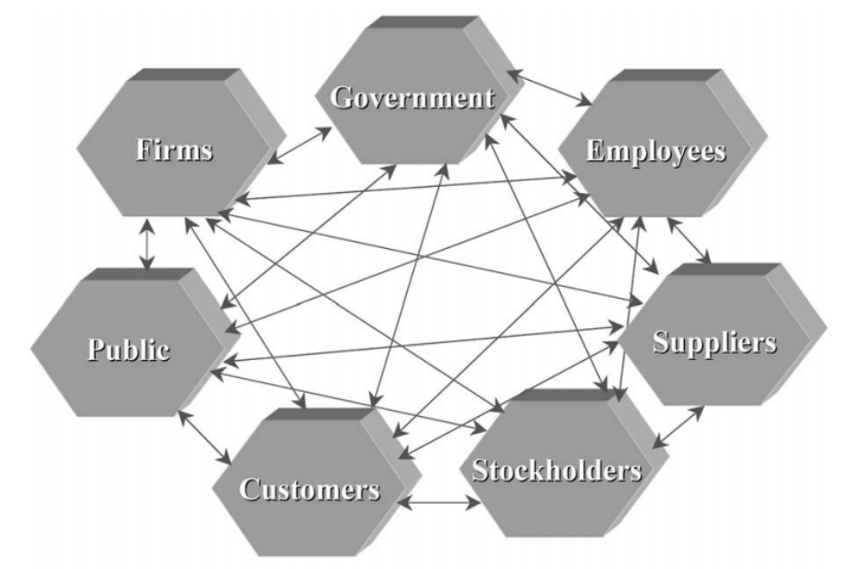

@edrd_project #organizational_systems #edrd ♬ original sound - edrd_project
Systems can be defined as a collection of parts that interact and function as one (Foster-Fishman et al., 2007). There is value in viewing all the components within for-profit organizations as a system. If the various sectors of an organization such as its mission statement, organizational culture, or organizational structure are focused on individually, interconnections and interrelationships are lost (Werhane, 2002). In order for an organization to utilize systems thinking, it must view the organization as a whole built of interdependent elements, subsystems, and networks of interactions (Werhane, 2002).
To initially create this sense of wholeness in a for-profit organization, there are four related practices proposed by Laloux (2014). The first practice is to set ground rules for a safe space. Employees must feel safe to fully work within the organization. This can be established through setting organizational values. The second practice is to have a unique workplace that disregards any initial assumptions of what a workplace should look like. The third practice is ensuring an effective onboarding process. Finally, the last practice is having inviting meeting practices that align with the organization (Laloux, 2014, p. 263). All of these practices contribute to organizations finding a sense of wholeness which would contribute to optimal systems thinking.
It is important to recognize that organizations are targets of system change. Desired changes within a targeted population, in this case a for-profit organization, will not happen without the surrounding systems making the required adjustments (Foster-Fishman et al., 2007). Systems thinking allows organizations to go beyond applying quick fixes to a specific concern (Alter, 2011). A for-profit organization should also be concerned as to where their stakeholders fall within their system. Various stakeholder relationships will overlap (please see figure 1). Therefore, it is crucial to be transparent as to what each of the components of the system are accountable for in order to identify where any decision making has potentially gone wrong (Werhane, 2002).
In sum, it is critical that for-profit businesses are viewed as a collection of working parts that implement a cohesiveness and interconnectedness that allows an organization to operate as a whole rather than putting focus on various sectors individually.
Alter, S. The Work System Method: Systems Thinking for Business Professionals
(2011). Business Analytics and Information Systems. 32.
https://repository.usfca.edu/at/32
Foster-Fishman, P. G., Nowell, B., & Yang, H. (2007). Putting the system back into
systems change: a framework for understanding and changing organizational
and community systems. American Journal of Community Psychology,
39(3–4), 197–215. https://doi.org/10.1007/s10464-007-9109-0
Laloux, F. (2014). Reinventing Organizations: A Guide to Creating Organizations
Inspired by the Next Stage of Human Consciousness. Nelson Parker.
Werhane, P.H. Moral Imagination and Systems Thinking. Journal of Business Ethics
38, 33–42 (2002). https://doi.org/10.1023/A:1015737431300